Операции генерации линий.
Линии могут использоваться как части составных граней (см. операции sew и fill), а также как аргументы для операций ссылочной геометрии.
segment
Отрезок линии задаётся двумя точками.
segment(pnt1, pnt2)
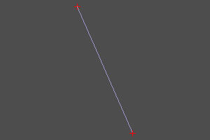
polysegment
Полисегмент - ломанная линия. Задаётся масивом точек. Установка флага closed добавляет сегмент полилинии, идущий от точки конца к точке начала. pnts - массив точек.
polysegment(pnts, closed=True/False)
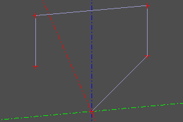 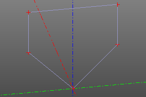
interpolate
Инструмент для построения bspline по набору точек pnts. Также можно указать тангенсы tangs линии в каждой точке (нулевой мектор соответствует неуказанному тангенсу). Установка флага closed добавляет замыкающий участок кривой.
interpolate(pnts, tangs=[], closed=False)
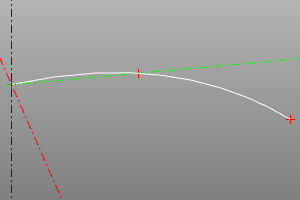
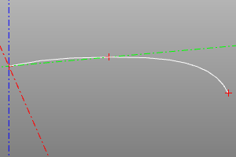
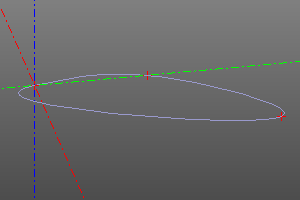
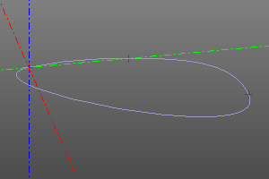
circle_arc
Данный метод представляет альтернативный к circle (см. Плоские примитивы) метод генерации дуги окружности по трем точкам.
circle_arc(p1, p2, p3)
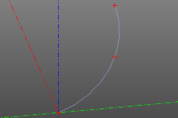
helix
Восходящая спираль. Задается радиусом, высотой и шагом витка. При установке опции left, меняет правую навивку на левую. При установке angle, радиус линейно меняется со сменой высоты.
helix(r, h, step, left=True/False)
helix(r, h, step, angle=angle, left=True/False)
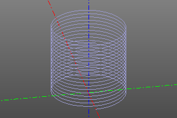
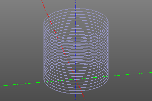
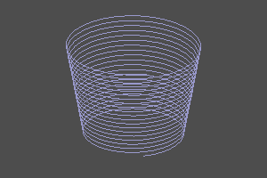
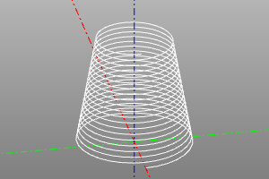
bezier
Кривая Безье (wiki). Задаётся массивом опорных точек и массивом весов (опционально). Если веса не заданы, все веса считаются равными единице.
bezier(pnts)
bezier(pnts, weights)
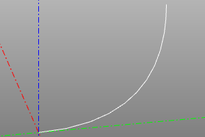 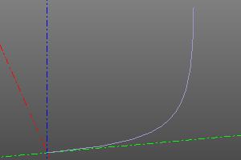
bspline
Создать BSpline прямым заданием параметров.
bspline(pnts, knots, muls, degree, periodic=False/True)
bspline(pnts, knots, weights, muls, degree, periodic=False/True, check_rational=False/True)
default:
periodic=False
check_rational=True